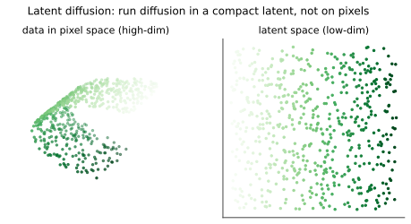
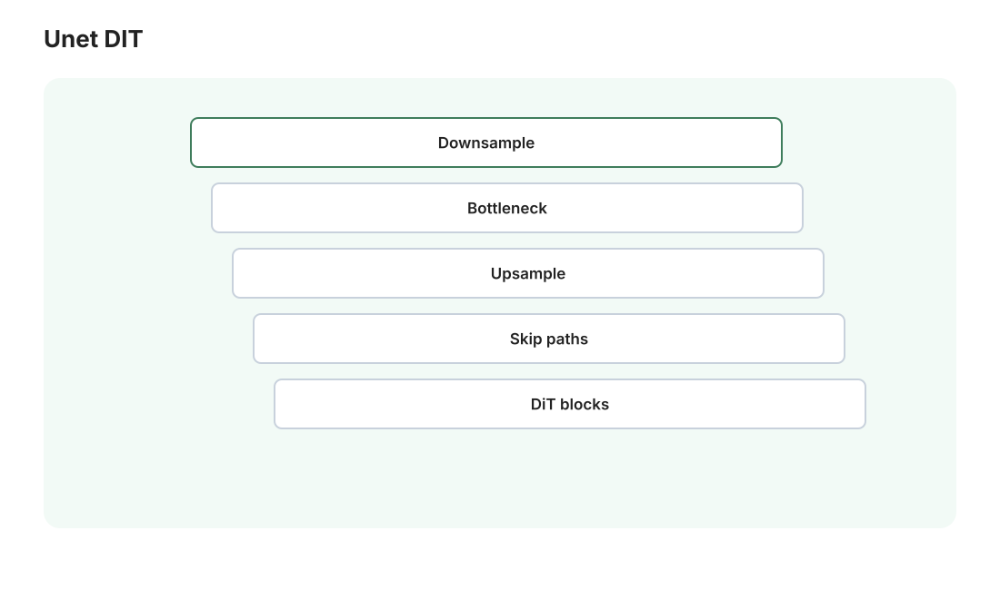

本讲目录
第 04 讲 · 潜空间与整机架构
前两讲把"扩散"的数学讲完了，但一直假装网络 \(\epsilon_\theta\) 是个黑盒、图像直接在像素上加噪。本讲拆开整机：Stable Diffusion = VAE（压缩）+ 文本编码器（读题）+ 去噪网络（干活） 三大件。看懂这三大件，你就看懂了 ComfyUI 里所有模型加载节点、
E:\AI\Models下那十几个文件夹、以及 SD1.5/SDXL/FLUX 之间到底差在哪。
1. 潜空间：SD 的立身之本

1.1 像素扩散太贵
在 \(512 \times 512 \times 3 \approx 7.9 \times 10^5\) 维的像素空间跑扩散，每步去噪都要网络处理全分辨率图像，训练和采样都极其昂贵（早期像素扩散模型只有大厂玩得起）。
Latent Diffusion（Rombach et al. 2022，即 SD 的论文）的洞察：图像的像素里绝大部分是"感知冗余"——邻近像素高度相关，人眼对高频细节的精确值不敏感。那就先用一个 VAE 把图像压进一个小得多的潜空间，在潜空间里跑扩散，最后再解压回像素：
维数从 786k 降到 16k，缩小约 48 倍——同样的数学，1/48 的战场。这就是消费级显卡能跑 SD 的原因，也是"Stable Diffusion"里 stable 之外那半个奇迹。
1.2 由此立刻解释的 ComfyUI 现象
- KSampler 的输入输出都是 LATENT（粉色线）——它全程在潜空间工作，从没见过像素；
- VAE Decode 是"显影"步骤：潜空间 → 像素，出图前必经；VAE Encode 是反向：图生图/重绘要先把你的图压进潜空间才能加噪（第 02 讲 denoise 的机制 + 本讲的压缩，两块拼图合上了）；
- Empty Latent Image 的尺寸要填 1024 而不是 128：你填的是目标像素尺寸，节点替你除以 8；
- VAE 决定色彩与细腻度：解码器是最后一道工序，它的质量直接决定成图的色彩饱和度、皮肤质感、小字是否糊。所以社区有"更好的 VAE"单独发布（
Models/vae文件夹的用途），某些 checkpoint 内置的 VAE 偏灰就换一个外置的； - 潜空间不是无损的：8 倍压缩必然丢信息（极小的人脸、细密纹理是重灾区）——第 14 讲的"放大精修流水线"本质就是在补潜空间的账。
2. 文本编码器：把提示词变成向量组
提示词进入模型前，经历 tokenize → embedding → Transformer 编码，产出一组向量（每个 token 一个），这组向量就是第 02 讲以来一直写的条件 \(c\)。
- SD1.5：用 CLIP 的文本塔（CLIP：OpenAI 2021，图文对比学习——4 亿图文对上训练"配对的图文向量相近"，它的文本向量天然"懂视觉"，故成为文生图标配）。CLIP-L 只有 77 个 token 上限、理解偏"标签级"——SD1.5 提示词习惯写成逗号分隔的关键词堆，根源在此；
- SDXL：双文本编码器（CLIP-L + OpenCLIP-bigG）拼接，理解力显著升级；
- SD3 / FLUX：再加入 T5-XXL（真正的语言模型级编码器，参数量比整个 SD1.5 还大）——从此能读完整长句、方位关系、图内文字。"FLUX 提示词要写自然语言长句而不是词堆"的原因就在这里。
对应 ComfyUI：CLIP Text Encode 节点做的就是这一步（黄色 CLIP 线进，橙色 CONDITIONING 线出）；Models/text_encoders（或 clip）文件夹放的就是这些编码器的权重——SD1.5/SDXL 的 checkpoint 里已打包，FLUX 一族则常拆开单独下载。
3. 去噪网络本体：U-Net → DiT

3.1 U-Net：卷积时代的答案
SD1.5/SDXL 的 \(\epsilon_\theta\) 是 U-Net：编码路径逐级下采样（64→32→16→8）抓全局结构，解码路径逐级上采样恢复分辨率，同分辨率层之间有跳跃连接直通细节（输入输出同形状的任务的经典架构——去噪正是）。两个关键改装：
- 时间嵌入：当前噪声水平 \(t\) 编码成向量注入每一层——同一个网络要在"全是噪声"到"几乎干净"的每个阶段工作，必须知道现在是哪个阶段；
- Cross-Attention 注入文字（姊妹课程第 06 讲的公式在此上岗）：U-Net 中低分辨率层插入注意力块，Q 来自图像特征，K/V 来自文本向量组——图像的每个空间位置"查询"提示词里所有 token，按相关性吸收语义。"提示词影响画面"的物理通道就是这些 cross-attention 层（第 05 讲的 LoRA 和 IP-Adapter 都将在这个通道上做文章，此处是伏笔）。
3.2 DiT：Transformer 接管
Diffusion Transformer（Peebles & Xie 2023）：把潜空间图切成 patch 序列，整个去噪网络就是一叠 Transformer 块（Sora、SD3、FLUX、Qwen-Image 均属此系）。动机与姊妹课程第 06/07 讲一脉相承：Transformer 的 scaling 性质好——加参数加数据，性能按幂律稳定爬升，而 U-Net 放大到一定规模后收益变差。SD3/FLUX 用的 MMDiT 变体让文本 token 和图像 patch 在同一序列里双向注意（不再是单向的 cross-attention），图文对齐更强。
3.3 流匹配：更直的路
FLUX/SD3 还换了训练目标：流匹配 / 整流（rectified flow）。把"数据→噪声"的路径定义为最朴素的直线插值：
网络学习这条路径的速度场 \(v_\theta(x_t, t) \approx \epsilon - x_0\)（损失仍是平方损失，与第 02 讲同构——你已有的全部理解平移可用）。好处：DDPM 的加噪路径是弯曲的，而直线路径用数值积分（第 03 讲）走起来步数更少、误差更小。工程结论：FLUX 系不看 cfg 看 guidance（蒸馏进权重的引导强度，дefault ~3.5），采样器搭配也不同——遇到 FLUX 别照搬 SDXL 参数。
4. 系谱与"整机 vs 散件"
4.1 主流模型系谱（2026 年初，只列你会遇到的）
| 模型 | 年份 | 去噪网络 | 文本编码 | 原生分辨率 | 在你 16GB 卡上 |
|---|---|---|---|---|---|
| SD1.5 | 2022 | U-Net (0.86B) | CLIP-L | 512 | 秒出，练手神器 |
| SDXL | 2023 | U-Net (2.6B) | 双 CLIP | 1024 | 主力甜点区 |
| SD3.x | 2024 | MMDiT | 双 CLIP + T5 | 1024 | 可跑，生态一般 |
| FLUX.1 | 2024 | MMDiT (12B) | CLIP-L + T5 | 1024+ | fp8 量化可跑，慢但质高 |
| Qwen-Image | 2025 | DiT 系 | 多模态 LLM | 1024+ | fp8 可跑（你朋友工作流用的这个） |
| 动漫特化（Illustrious/NoobAI 等） | 2024–25 | SDXL 底子微调 | 同 SDXL | 1024 | 你的 VRChat 场景主推（第 10 讲） |
4.2 checkpoint 文件到底是什么
一个 .safetensors checkpoint = 三大件打包：去噪网络 + 文本编码器 + VAE，一个文件全装。所以 ComfyUI 的 Checkpoint Loader 一个节点吐出三条线：MODEL（紫）、CLIP（黄）、VAE（红）——现在你知道每条线是什么了。
而 FLUX/Qwen 时代流行散件分发：diffusion_models/（或 unet/）只放去噪网络、text_encoders/ 放文本编码器、vae/ 放 VAE，各下各的、按需组合（T5 太大，打包进每个微调版太浪费）。对应 ComfyUI 的散件加载路线：UNET Loader + CLIP Loader（可加载双/三编码器）+ VAE Loader 三个节点分别加载，再各自接线。E:\AI\Models 下那些空文件夹的用途至此全部对号入座。
两个实用小知识：
.safetensorsvs 老.ckpt：老格式是 pickle，理论上能藏任意代码，只下 safetensors（纯张量，无执行风险）；- 文件大小差异 = 精度：同一模型的 fp16（半精度）约是 fp32 的一半，fp8 再减半，
Q4类 GGUF 量化更小——质量逐级微降、显存逐级解放。你的 SDXL base 是 6.6GB 的 fp16 版；将来下 FLUX 就要主动挑 fp8 版（fp16 的 23GB 塞不进 16GB 显存）。
5. 整机流水线总览
把四讲的内容拼成一张完整流程（文生图，SDXL 为例）：
提示词 ──CLIP×2──▶ 条件向量组 c ─────────────┐
▼ (cross-attention, 每步)
随机种子 ──▶ 潜空间噪声 z_T ──▶ [U-Net 去噪 ε_θ ×25 步, CFG 双跑] ──▶ z_0
(64×4×128×128) (第02讲的数学, 第03讲的积分器) │
VAE Decode ▼
1024×1024 像素图
ComfyUI 的默认文生图工作流，就是把这张图的每个箭头画成一根线、每个方块画成一个节点——第 07 讲将逐节点验证这句话。
本讲小结
| 概念 | 一句话 |
|---|---|
| 潜空间扩散 | VAE 压缩 8×，扩散战场缩小 48×——消费级显卡的门票 |
| VAE | 显影/压缩两用件；决定色彩细节；可单独替换 |
| 文本编码器 | CLIP（词堆）→ 双 CLIP → +T5（长句）；决定提示词写法 |
| U-Net | 下-上采样+跳连；时间嵌入知进度；cross-attention 吃文字 |
| DiT/流匹配 | Transformer 化吃 scaling 红利；直线路径少步数 |
| checkpoint | 三大件打包；散件 = unet/clip/vae 分文件夹自由组合 |
| safetensors | 只下这种格式；文件大小 ≈ 精度档位 |
三大件都认识了，最后一块原理拼图：怎么在不重训整机的前提下定制它——几十 MB 的 LoRA 为什么能改变整个画风？ControlNet 怎么让模型"看着骨架画"？下一讲把定制件的数学讲完，原理篇收官。